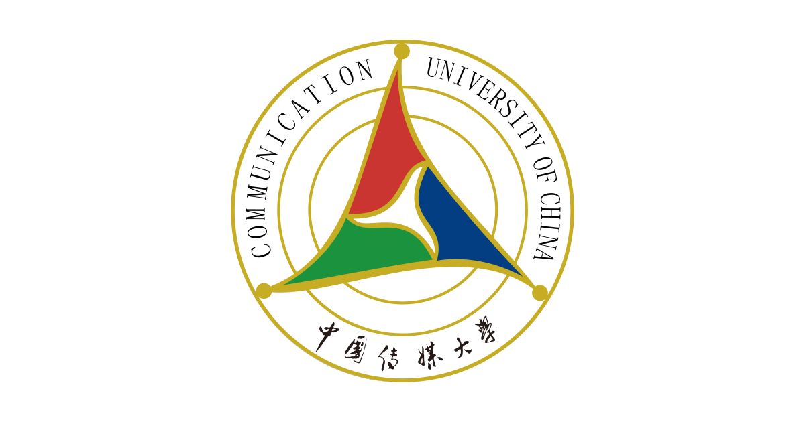
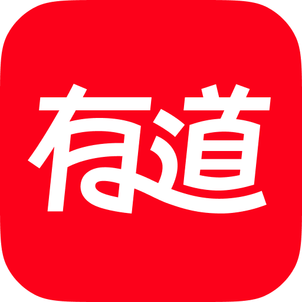

北京大学 · 信息资源管理
已保研至北京大学信息管理系，无升学压力，可稳定投入长期实习与后续职业发展准备。
你好，我是陈姝君。
我的经历主要集中于 数据分析、AI Agent 应用验证、业务运营与内容策略。
已保研至北京大学信息管理系，无升学压力，可稳定投入长期实习与后续职业发展准备。

GPA 3.86 / 4.00，专业排名 1 / 21。主修运筹学、数据可视化、管理统计学、数据结构与算法、大数据分析、数据库技术等课程，具备统计学与机器学习理论基础。

负责 CPA、BPO、学生端等多条业务线的日报自动化与渠道归因分析。通过 VLOOKUP、数据透视表与基础 SQL 查询处理千级订单量数据，搭建“选型 - 代理 - 年级”多维分析框架，支撑投放策略调整；同时梳理批量退费工单 SOP，协助配置落地页、下单页与课程 ID、渠道链接等链路信息。
独立设计并搭建“热点感知 → 选题策略 → 内容生成 → 数据反馈”的产品闭环，在 26 天内累计发布 38 篇图文笔记，账号获得 84 万+曝光，单篇最高曝光 51.7 万。
目前暂无公开学术论文发表，后续会将毕业论文、创新项目和实践型研究逐步整理成更完整的公开成果。
从真实运营目标出发，独立构建 AI Agent 工作流，完成选题、内容生成、数据反馈和策略实验，验证 AI 在内容运营场景中的可行性。
参与平台搭建、算法整合与 UI 设计，将视觉识别能力与农业物流服务场景结合，最终形成软件著作并入选国家级大学生创新项目。
负责小程序 UI 设计与前端搭建，同时参与优质原创 IP 的资源捕捉和合作推进，累计取得 7 项独家授权并获得省级创新创业奖项。
主管学院组织部、研工部，负责党员团员发展、团务信息整合、日常宣传与组织架构管理；同时担任毕业礼制片组组长，推进多人协作项目落地。
如果你也有同样的爱好，点击标签告诉我。